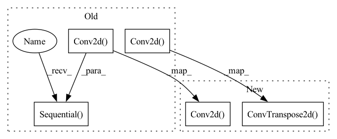

Pattern ID :6294

Before Change
for _ in range(len(hidden_dims)):
modules.append(
nn.Sequential(
nn.Conv2d(in_channels, out_channels=64,
kernel_size= 3, padding= 1),
nn.BatchNorm2d(64),
nn.ReLU(),
nn.Upsample(scale_factor=2, mode="bilinear",
align_corners=True))
)
in_channels = 64
self.decoder = nn.Sequential(*modules)
self.final_layer = nn.Sequential(
nn.Conv2d(64, out_channels= 3,
kernel_size= 3, padding= 1),
nn.Sigmoid())
def encode(self, input: Tensor) -> List[Tensor]:
Encodes the input by passing through the encoder network
After Change
self.decoder = nn.Sequential(*modules)
self.final_layer = nn.Sequential(
nn.ConvTranspose2d(hidden_dims[-1],
hidden_dims[-1],
kernel_size=3,
stride=2,
padding=1,
output_padding=1),
nn.BatchNorm2d(hidden_dims[-1]),
nn.LeakyReLU(),
nn.Conv2d(hidden_dims[-1], out_channels= 3,
kernel_size= 3, padding= 1),
nn.Tanh())
def encode(self, input: Tensor) -> List[Tensor]:
In pattern: SUPERPATTERN
Frequency: 3
Non-data size: 5
Instances
Fragment ID: 21831781
Project Name: antixk/pytorch-vae
Commit Name: 291a37d9fe92de7d781575163f2cf6453951f652
Time: 2020-01-15
Author: anandkrish894@gmail.com
File Name: models/vanilla_vae.py
M Class Name: VanillaVAE
N Class Name: VanillaVAE
M Method Name: __init__(4)
N Method Name: __init__(4)
M Parent Class: BaseVAE
N Parent Class: BaseVAE
M File Name: models/vanilla_vae.py
N File Name: models/vanilla_vae.py
M Start Line: 20
M End Line: 64
N Start Line: 20
N End Line: 73
'>
Before Change
for _ in range(len(hidden_dims)):
modules.append(
nn.Sequential(
nn.Conv2d(in_channels, out_channels=64,
kernel_size= 3, padding= 1),
nn.BatchNorm2d(64),
nn.ReLU(),
nn.Upsample(scale_factor=2, mode="bilinear",
align_corners=True))
)
in_channels = 64
self.decoder = nn.Sequential(*modules)
self.final_layer = nn.Sequential(
nn.Conv2d(64, out_channels= 3,
kernel_size= 3, padding= 1),
nn.Sigmoid())
def encode(self, input: Tensor) -> List[Tensor]:
Encodes the input by passing through the encoder network
After Change
self.decoder = nn.Sequential(*modules)
self.final_layer = nn.Sequential(
nn.ConvTranspose2d(hidden_dims[-1],
hidden_dims[-1],
kernel_size=3,
stride=2,
padding=1,
output_padding=1),
nn.BatchNorm2d(hidden_dims[-1]),
nn.LeakyReLU(),
nn.Conv2d(hidden_dims[-1], out_channels=3,
kernel_size=3, padding=1),
nn.Tanh())
def encode(self, input: Tensor) -> List[Tensor]:
'>
Fragment ID: 21831776
Project Name: antixk/pytorch-vae
Commit Name: b12ec15961ce3df885db81550ee313a9e3c940f6
Time: 2020-01-16
Author: anandkrish894@gmail.com
File Name: models/gamma_vae.py
M Class Name: GammaVAE
N Class Name: GammaVAE
M Method Name: __init__(4)
N Method Name: __init__(4)
M Parent Class: BaseVAE
N Parent Class: BaseVAE
M File Name: models/gamma_vae.py
N File Name: models/gamma_vae.py
M Start Line: 24
M End Line: 68
N Start Line: 23
N End Line: 73
'>
Before Change
nn.ReLU(),
nn.Conv2d(hdim, hdim, 4, stride = 2, padding = 1),
nn.ReLU(),
nn.Conv2d(hdim, hdim, 4, stride = 2, padding = 1),
nn.ReLU(),
nn.Conv2d(hdim, num_tokens, 1)
)
self.decoder = nn.Sequential(
nn.ConvTranspose2d(dim, hdim, 4, stride = 2, padding = 1),
nn.ReLU(),
nn.ConvTranspose2d(hdim, hdim, 4, stride = 2, padding = 1),
nn.ReLU(),
nn.ConvTranspose2d(hdim, hdim, 4, stride = 2, padding = 1),
nn.ReLU(),
nn.Conv2d(hdim, 3, 1)
)
self.num_tokens = num_tokens
self.codebook = nn.Embedding(num_tokens, dim)
After Change
dec_in = dim if i == 0 else hdim
decoder_layers += [
nn.ConvTranspose2d(dec_in, hdim, 4, stride = 2, padding = 1),
nn.ReLU(),
]
encoder_layers.append(nn.Conv2d(hdim, num_tokens, 1))
decoder_layers.append(nn.Conv2d(hdim, 3, 1))
self.encoder = nn.Sequential(*encoder_layers)
self.decoder = nn.Sequential(*decoder_layers)
'>
Fragment ID: 21831778
Project Name: lucidrains/dalle-pytorch
Commit Name: 95a980129346b66ce7cbb3f984b698ca21e0965c
Time: 2021-01-06
Author: nauman.mustafa.x@gmail.com
File Name: dalle_pytorch/dalle_pytorch.py
M Class Name: DiscreteVAE
N Class Name: DiscreteVAE
M Method Name: __init__(5)
N Method Name: __init__(4)
M Parent Class: nn.Module
N Parent Class: nn.Module
M File Name: dalle_pytorch/dalle_pytorch.py
N File Name: dalle_pytorch/dalle_pytorch.py
M Start Line: 82
M End Line: 102
N Start Line: 80
N End Line: 107